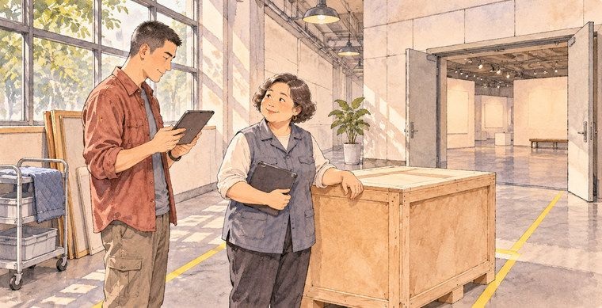

IS-42 · Hong Kong · 15 minutes · Offline synchronisation · Concurrent editing · Data integrity · Exception handling
Two offline edits. One workable plan?

A saved change is not always a confirmed plan
Firebase documents a mode in which a device can write to its local copy while offline and synchronise when it reconnects. Apache CouchDB’s replication guide illustrates how offline edits can diverge from a common version. The following exhibition team and merge policies are fictional and do not reproduce either system’s implementation.
Your classroom decision
A Hong Kong exhibition co-ordinator must choose how a dispatch app handles edits made offline by authorised crews. Both crews downloaded version 12 of the same delivery plan. The freight crew sends its update first when it reconnects. The venue crew sends its update second. Neither has seen the other’s edit.
Policy L replaces the entire stored plan with the copy received last. Policy M combines only the fields that each crew changed, keeping unchanged fields from version 12. For this case the crews never edit the same field. Offline edits are proposals; only the dispatch desk can confirm a plan.
A crate fits for this exercise only if its packed width is at most the approved width for the destination. East Hall allows up to 95 cm; West Hall up to 70 cm. These are stipulated planning inputs, not actual access or handling guidance. The desk note does not affect fit.
| Field | Version 12 | Freight copy | Venue copy |
|---|
| Destination | East Hall | East Hall | East Hall |
| Packed width | 60 cm | 85 cm | 60 cm |
| Desk note | None | None | Use side desk |
Your decisionWhat would each policy put on the dispatch screen? Which preserves both intended edits, and should this merged plan be confirmed under the stated fit rule?
Round 2 · More information
Now replay from version 12. Freight again changes the packed width to 85 cm. The venue crew again updates its desk note and also changes the destination to West Hall. It still sees the old 60 cm width. The crews reconnect in the same order.
A rehearsal of 18 such record pairs finds that 12 changed-field merges pass the fit check and six need a dispatch review. Each review takes four minutes. The reviewer has 20 minutes before the next dispatch run. The desk can routinely confirm the 12 compatible plans without using this 20-minute review budget. The reviewer spends this budget only on the six incompatible plans.
Your decisionWhich plan could each policy show now? Describe what should happen to an incompatible plan and calculate how many records can be confirmed before the run if all completed reviews resolve their conflicts.
Debrief · Preserve both independent edits
Policy L uses the venue crew’s whole copy: East Hall, 60 cm and “Use side desk.” It silently drops the freight change. Policy M gives East Hall, 85 cm and “Use side desk.” Since 85 ≤ 95, the dispatcher can confirm this version under the stated fit rule.
Debrief · Separate fields can still break one plan
On replay, L again loses the 85 cm edit and shows West Hall with 60 cm. The fields fit on screen but no longer describe the intended crate. M retains both changes and shows West Hall with 85 cm. Each crew’s copy passed the fit rule by itself, but 85 exceeds West Hall’s limit of 70.
Debrief · Hold the plan, not the information
Show both proposals and their common base to the dispatch reviewer. Mark the plan “Pending review” and block its use for dispatch. Confirm only after checking an agreed combination, such as East Hall and 85 cm if East is actually available, or West Hall and a verified crate no wider than 70 cm.
Debrief · Budget for the unresolved work
Six reviews need 24 minutes. In 20 minutes the reviewer can resolve five, so up to 12 + 5 = 17 records can be confirmed and one stays on hold. To confirm all 18 before this run would require four more review minutes at the stated pace. Don’t count the remaining pending order as a successful merge.
Instructor note
Allow 15 minutes: 2 to read, 4 to reconstruct the copies, 5 to handle incompatibility and review capacity, then 4 to discuss. Ask for one test where edits to different fields must be held together and another where both can be applied automatically before dispatch confirmation.
Round two
Now replay from version 12. Freight again changes the packed width to 85 cm. The venue crew again updates its desk note and also changes the destination to West Hall. It still sees the old 60 cm width. The crews reconnect in the same order.
A rehearsal of 18 such record pairs finds that 12 changed-field merges pass the fit check and six need a dispatch review. Each review takes four minutes. The reviewer has 20 minutes before the next dispatch run. The desk can routinely confirm the 12 compatible plans without using this 20-minute review budget. The reviewer spends this budget only on the six incompatible plans.
Your decisionWhich plan could each policy show now? Describe what should happen to an incompatible plan and calculate how many records can be confirmed before the run if all completed reviews resolve their conflicts.